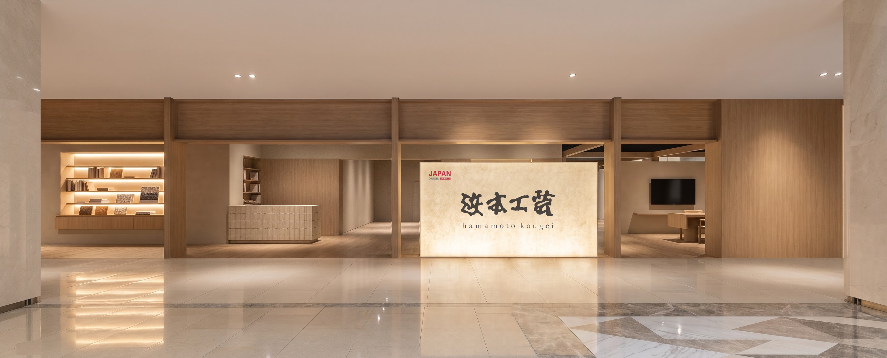

Làm chậm, để dùng lâu
Khởi đầu từ Hiroshima
Năm 1948, giữa giai đoạn tái thiết sau chiến tranh, Hamamoto bắt đầu là một hiệp hội làm mộc dành cho người khiếm thính và khiếm khuyết về nói ở Hiroshima. Bốn năm sau, Công ty Cổ phần Hamamoto Kogei ra đời, với xưởng Ujina tự làm trọn quy trình từ xẻ gỗ đến lắp ráp thành phẩm.

Gần tám thập kỷ chế tác
-
1948
Khởi đầu ở Hiroshima
Một hiệp hội làm mộc dành cho người khiếm thính và khiếm khuyết về nói, ra đời trong giai đoạn tái thiết sau chiến tranh.
-
1952
Hamamoto Kogei ra đời
Thành lập Công ty Cổ phần Hamamoto Kogei. Xưởng Ujina ở quận Minami, Hiroshima, làm trọn quy trình, từ xẻ gỗ đến lắp ráp đồ thành phẩm.
-
1956
Văn phòng Tokyo
Mở văn phòng kinh doanh ở Tokyo, rồi tiếp tục mở thêm văn phòng khắp Nhật Bản.
-
1965
Xưởng Dejima & Saeki
Hai xưởng Dejima và Saeki bắt đầu hoạt động.
-
1991
Xưởng Saeki mới
Xây mới xưởng Saeki.
-
1996
Kho vận Dejima
Xây mới kho vận Dejima.
-
2003
Trụ sở về Dejima
Chuyển trụ sở và showroom về Dejima.
-
2015
Thế hệ lãnh đạo mới
Ông Hamamoto Yohei lên làm giám đốc.
-
2018
70 năm thành lập
Kỷ niệm 70 năm thành lập.
-
2026
Dòng gỗ nguyên khối Putila
Ra mắt dòng “Putila” làm từ gỗ nguyên khối. Dòng này chỉ bán trên cửa hàng trực tuyến của hãng và được trưng bày ở các showroom Hamamoto trên khắp Nhật Bản.
-
2026
Đang hoàn thiện
Showroom tại Việt Nam
Không gian trưng bày chính hãng đang được hoàn thiện.
Xem showroom
Ít hơn, nhưng tốt hơn
Mỗi thiết kế bắt đầu bằng câu hỏi: điều gì có thể bỏ đi? Chúng tôi tin một món đồ đẹp là món đồ biết lùi lại, để con người và ánh sáng là trung tâm của căn phòng.

Mộng gỗ thay cho đinh vít
Các mối ghép sashimono được cắt và lắp hoàn toàn bằng tay, giúp khung chịu lực tốt và có thể tháo lắp, sửa chữa sau hàng chục năm.
Vật liệu & Craftsmanship
Kiểm định từng sản phẩm
Gỗ được sấy tới độ ẩm 8–10% và nghỉ ba tháng trước khi gia công. Mỗi sản phẩm qua kiểm tra tải trọng, độ bền màu và được nghệ nhân ký tên trước khi rời xưởng.